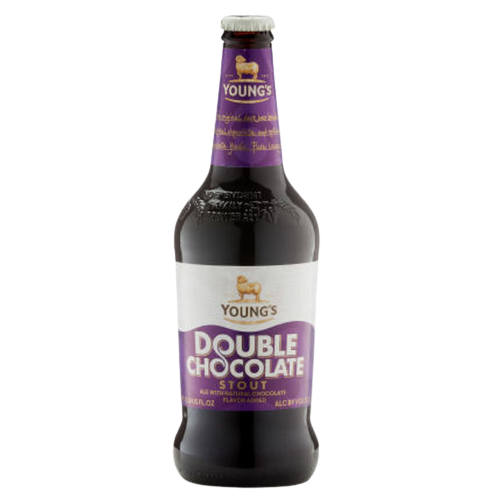
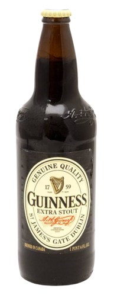
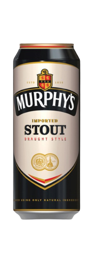
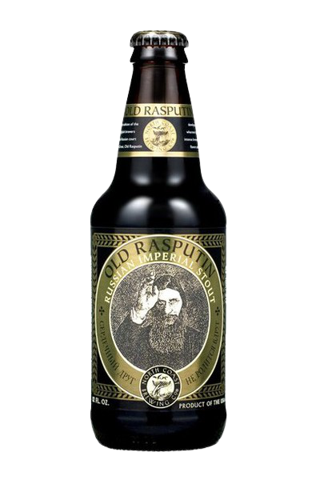
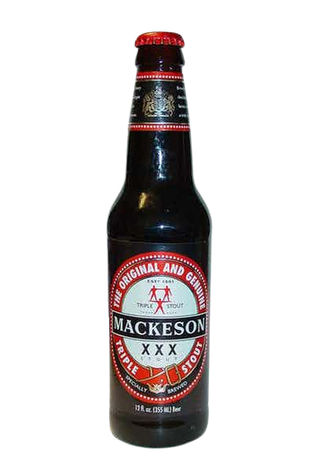
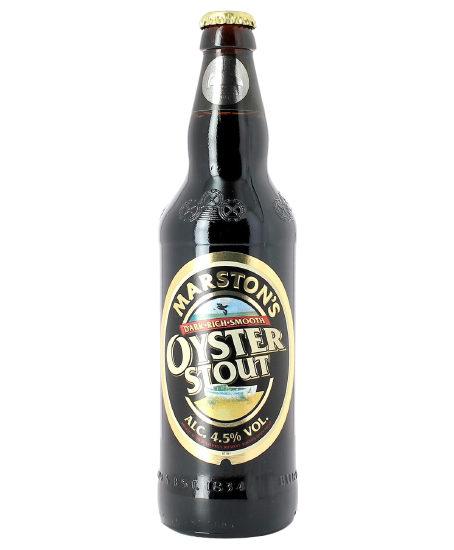

| Type | Notable Ingredients | Origin | Notable Brands / Beers | Taste / Aroma / Characteristics | Alcohol Content |
|---|---|---|---|---|---|
| Chocolate Stout | Dark Kilned Malt | - |  Young's |
Chocolate, Roasted Malt | Moderate |
| Dry / Irish Stout | Roasted Barley | England / Ireland |  Guinness, Murphy's |
Roasted Malt | Moderate |
| Imperial Stout | Dark Malt | England |  Old Rasputin |
Dark Chocolate, Roast, Coffee | Strong |
| Milk Stout | Lactose, Sugar | England |  Mackeson's |
Chocolate, Coffee, Caramel | Moderate |
| Oatmeal Stout | Oats (around 0.5%) | England | - | Earthy, Nutty | Moderate |
| Oyster Stout | Oyster concentrate | - |  Marston's |
Chocolate, Coffee, Caramel | Moderate |